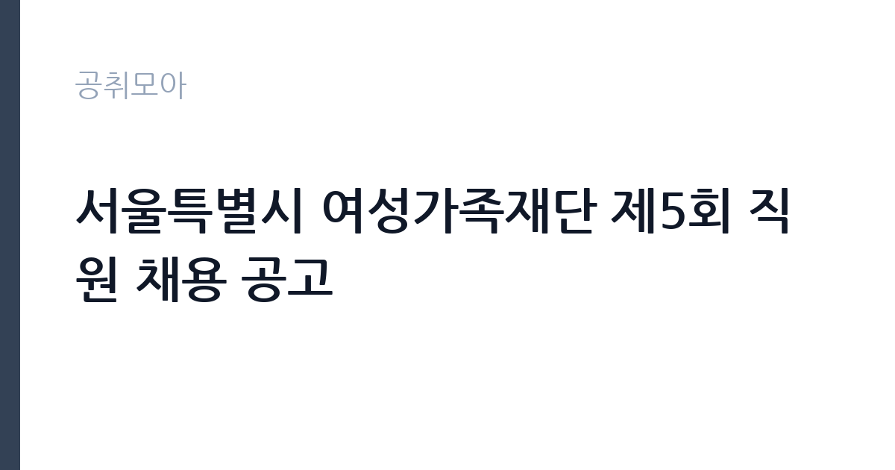

[공공기관] 서울특별시 여성가족재단 제5회 직원 채용 공고
서울특별시여성가족재단 · 서울 · 마감 2026-10-29 (D-10) · 출처 나라일터

한눈에 보는 모집 조건
| 기관 | 서울특별시여성가족재단 |
|---|---|
| 공고명 | 서울특별시 여성가족재단 제5회 직원 채용 공고 |
| 고용형태 | 기간제 |
| 근무지 | 서울 |
| 게시일 | 2026-10-19 |
| 마감일 | 2026-10-29 (D-10) |
지원자격, 이렇게 읽으세요
- 기능직주임 1명
- 접수 ~2026-10-29 마감
- 세부 조건은 원문 공고문 확인
이 공고는 조건이 짧고 명확합니다. 모집분야는 시설, 선발직급은 기능직주임, 고용형태는 계약직입니다. 가장 눈에 띄는 조건은 만 50세 이상이라는 점입니다. 일반 공채에서 보기 드문 연령 하한 조건으로, 중장년층의 시설 관리 경력을 활용하려는 의도로 읽힙니다. 학력이나 경력에 대한 별도 기준은 공고문에 세부로 적혀 있으니 원문을 확인하셔야 합니다. 접수는 서울시여성가족재단 지원페이지인 seoulwomen.hrdms.kr에서 온라인으로만 이뤄집니다. 접수 기간은 10월 23일부터 29일까지로, 실제 준비 기간은 일주일입니다.
이 공고의 포인트
이 공고의 핵심은 연령 조건입니다. 만 50세 이상을 요건으로 걸었다는 것은, 시설 관리 분야에서 오랜 경력을 가진 중장년 지원자를 대상으로 한다는 뜻입니다. 젊은 지원자와 경쟁하지 않아도 되는 드문 자리입니다. 두 번째는 기관의 성격입니다. 서울시여성가족재단은 여성과 가족 정책을 연구하고 사업을 운영하는 기관으로, 시설 관리 업무는 안정적입니다. 세 번째는 고용 형태입니다. 계약직으로 공고돼 있어 정규직이 아니라는 점은 감안해야 합니다. 다만 재단의 시설 직무는 근무 기간이 길게 유지되는 경우가 많으므로, 계약 기간과 갱신 조건을 확인하십시오.
전형은 어떻게 진행되나
전형은 서류전형과 면접전형으로 진행됩니다. 서류에서는 자격 요건과 경력을 확인하고, 면접에서는 시설 관리 실무와 근무 태도를 봅니다. 온라인 접수이므로 지원서 작성 시 입력 항목을 꼼꼼히 확인하십시오. 경력 기재란에는 근무 기간과 담당 업무를 정확히 적어야 하며, 증명서 발급이 가능한 경력만 쓰는 것이 안전합니다. 서류 합격자는 개별 통보를 받고 면접 일정이 안내됩니다. 최종합격 후에는 신원조회와 채용 신체검사가 이어집니다. 문의는 재단 인사 담당(070-8633-4530)으로 하면 됩니다.
원문에서 확인한 전형 방식
○ 모집분야: 시설 ○ 선발직급: 기능직주임 ○ 고용형태: 계약직 ○ 자격요건: 만 50세 이상 ○ 접수기간: 2026년 10월 23일 ~ 2026년 10월 29일 ○ 응시방법: 온라인 지원페이지를 통한 접수(https://seoulwomen.hrdms.kr/) ○ 문의처: 070-8633-4530 ※ 기타 세부사항은 반드시 공고문을 참고하시기 바랍니다.
이런 분께 추천해요
- 만 50세 이상으로 시설 관리 경력이 있는 분 — 연령 하한이 명시된 공고입니다
- 서울 지역에서 근무할 수 있는 분 — 재단 소재지 기준입니다
- 계약직이라도 안정적으로 시설 직무를 이어가고 싶은 분
지원 전 체크리스트
- 만 50세 이상 요건을 충족하는가 — 접수 마감일 기준으로 확인됩니다
- 온라인 지원페이지에서만 접수된다는 점을 확인했는가
- 경력 기재 내용이 증명서로 뒷받침되는가
- 마감일 2026-10-29 이전에 제출을 완료했는가
모집 일정과 제출 타이밍
마감은 2026년 10월 29일입니다. 접수 시작이 10월 23일이므로 준비 기간이 일주일도 되지 않습니다. 첫날 지원페이지에 회원가입하고 입력 항목을 확인하십시오. 둘째 날 경력증명서와 자격증을 준비하고, 셋째 날 지원서를 작성해 제출하는 일정이 현실적입니다. 면접은 서류 합격자에게 개별 통보되며, 시설 직무 특성상 현장 관리 경험을 묻는 질문이 나옵니다. 통보 후 일정이 짧으므로 미리 답변을 정리해 두십시오.
직무 이해하기: 공공기관
서울시여성가족재단은 서울시의 여성·가족 정책 연구와 사업 운영을 담당하는 기관입니다. 기능직주임(시설)은 재단이 운영하는 시설의 관리 업무를 맡습니다. 구체적으로는 건물 설비 점검과 유지보수, 시설 안전 관리, 청사 환경 관리, 행사 지원, 용역업체 관리 감독 등이 핵심입니다. 여성·가족 대상 프로그램이 운영되는 공간인 만큼, 이용자의 안전과 편의를 우선하는 대응이 필요합니다. 시설 관련 민원 응대와 작업 지시, 점검 일지 작성도 중요한 업무입니다. 중장년 경력을 인정하는 자리인 만큼, 현장에서의 판단과 대응 경험이 가장 큰 자산입니다.
자기소개서 작성 팁
이 공고의 자기소개서는 경력의 밀도를 보여주는 것이 핵심입니다. 첫 문단에 시설 관리 경력 연수와 담당했던 시설의 규모를 제시하십시오. 본론에서는 실제로 해결한 문제를 사례로 쓰십시오. 예를 들어 노후 설비를 교체해 고장 빈도를 줄인 경험, 안전 점검에서 위험 요소를 발견해 조치한 경험, 용역업체와 협업해 청소 상태를 개선한 경험 등입니다. 숫자를 붙이면 설득력이 높아집니다. 마무리에는 재단 시설의 안정적 운영에 기여하겠다는 의사를 밝히십시오. 오랜 경력이 있다면 이력서에 모든 경력을 나열하기보다, 시설 관리와 직접 관련된 경력을 앞세우는 편이 효과적입니다.
면접 준비 포인트
면접은 실무와 태도 중심입니다. 시설 관리에서 가장 중요한 것이 무엇이라고 생각하는지, 돌발 상황에서 어떻게 대응했는지, 이용자 민원을 어떻게 처리했는지가 단골 질문입니다. 답할 때는 상황, 판단, 조치, 결과 순으로 정리해 말하십시오. 재단은 여성과 가족을 대상으로 프로그램을 운영하는 기관이므로, 이용자 응대에 대한 감각도 평가됩니다. 안전과 청결, 친절을 함께 언급하면 좋습니다. 마지막으로 근무 시간과 출퇴근에 문제가 없는지 확인하는 질문이 나올 수 있습니다.
급여·근무조건 읽는 법
보수는 재단의 직급별 보수 규정에 따라 정해지며, 원문 공고문의 처우 항목에서 확인해야 합니다. 이번 공고에서는 금액이 공개되지 않았으므로 구체적인 수치는 원문을 기준으로 하십시오. 기능직주임은 직급 체계상 초임 직급에 해당하고, 경력에 따라 호봉이 반영될 수 있습니다. 계약직이므로 계약 기간이 정해져 있고, 계약 만료 시 퇴직급여가 발생합니다. 4대 보험은 근로자 신분에 따라 적용됩니다. 계약 갱신 가능성과 갱신 기준은 반드시 확인할 항목이므로, 면접 단계에서 질문하거나 인사 담당에게 문의하십시오.
자주 묻는 질문
- 연령 조건이 있나요?
네. 공고에 만 50세 이상으로 명시돼 있습니다. 중장년 시설 관리 경력자를 대상으로 한 조건입니다. - 정규직인가요?
아닙니다. 고용형태가 계약직으로 공고돼 있습니다. 계약 기간과 갱신 조건은 원문 공고문에서 확인하십시오. - 접수는 어떻게 하나요?
서울시여성가족재단 지원페이지 seoulwomen.hrdms.kr에서 온라인으로만 접수합니다. 마감은 2026년 10월 29일입니다.
함께 보면 좋은 공고
[공공기관] 2026년 하반기 중소벤처기업진흥공단 체험형 청년인턴(일반) 채용 공고 — 마감 2026-11-03[공공기관] 2026년 제3차 동남권원자력의학원 직원채용 공고 — 마감 2026-11-02[공공기관] 2026년 한국잡월드 정규직 신입(5급) 직원 채용 공고 — 마감 2026-11-04출처: 나라일터 공개정보를 바탕으로 공취모아가 정리한 안내글입니다. 모집 조건·일정은 변경될 수 있으니 지원 전 반드시 원문 공고문을 확인하세요. 본 글은 정보 제공용이며 합격을 보장하지 않습니다.